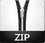

Yes, I have made softwares! :) The most interesting part is:- it is not by any drag and drop application. I made it using python. Python is a very powerful programing language. It is used in almost all areas of programing. So, I made several softwares using it. I have also gave a name to my software making company "Zcorp". I had sooo much fun making. Some of them are listed below:
- Zweather
It is a weather forecasting software. Using it you can get weather information about all cities in the world! I have used openweathermap api for getting the info. You will have to just give the name of your city and it'll get info about it. I've tried to give it a stylish look as much as I can. You can, of course suggest me for any modification you want. You can find me in Github. You are also welcome to contrubute in this project if you find any bug.
I have made two versions of it. A portable version and an installer. You can download from bellow as you wish. Oh! I forgot, the password is Zcorp.
-  Portable version: Zweather 1.5 Size: 10.3MB
Installer version: Zweather 1.5 Size: 9.1MB
Screenshot of Zweather
- Zcurrency
This is one of my favorate softwares. Using it you can get updated exhange rate of any currency you want. I have also provided the full meaning of any curreny code i.e BDT stands BanglaDeshi Taka. I think it'll be helpful for commercial use. I have tried to make it as simple as I can. I have given a simple look to it. If you have any suggestion to improve it or have found any bug, please contact me. You can find me on Github. Installation password is Zcorp.
Installer version: Zcurrency 1.0 Size: 9.1MB
Screenshot of Zcurrency
- Ztube
This is a youtube video downloading software. Using it, you can download almost every youtube video. You won't get any annoying ads! But it is a console applocation. It's not GUI(Graphical User Interface) program like the two others. You will have to give command to download videos.It's password is Zcorp.
Installer version: Ztube 1.0 Size: 9.1MB